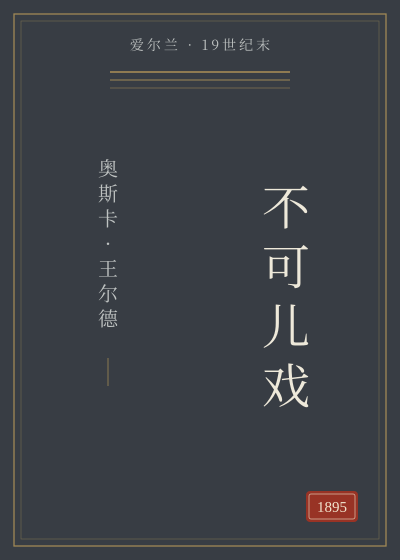
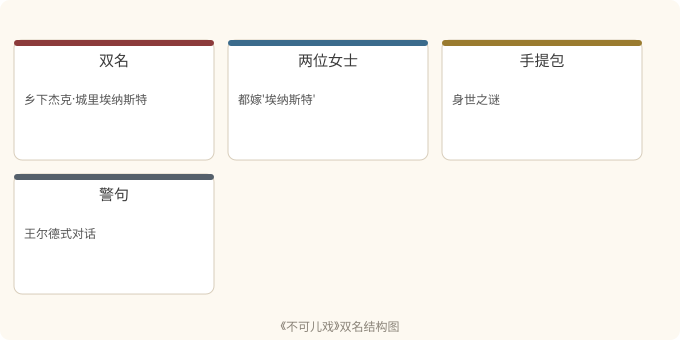

不可儿戏
一、基本信息
| 作者 | 王尔德 |
|---|---|
| 成书/出版 | 1895年（作者页 B132 口径：不可儿戏（1895）） Oscar Wilde — Encyclopaedia Britannica（百科全书） |
| 国别/地区 | 爱尔兰 |
| 时代 | 近代 · 19世纪末 |
| 体裁 | 三幕喜剧 |
| 语言 | 英语 |

《不可儿戏》双名结构图（主题·结构图）
二、创作背景
作者页（B132）：王尔德 major_works 载'不可儿戏（1895）、温德米尔夫人的扇子（1892）'（B132 作者页定位，详见 daolian 条核对）。
题材（通说）：双城双名的身份游戏——'Bunburying'（假造病人遁词）。
三、内容脉络
杰克在乡下叫杰克、在伦敦叫'埃纳斯特'；阿尔杰农如法炮制（通说待核）。
手提包之谜与身世揭晓——误会喜结连理（通说待核）。
四、主要人物表
| 人物 | 身份 | 说明 |
|---|---|---|
| 杰克/埃纳斯特 | 双重身份者 | （通说待核） |
| 巴克尔克?——不：Gwendolen 与 Cecily | 两位女士 | 都爱'埃纳斯特'（通说待核） |
五、主题与艺术特点
- 警句喜剧的巅峰（通说）。
- 身份的双重性与虚伪（通说）。
- '认真的重要'——题目的反讽（通说待核）。
六、影响与评论
- 作者页：王尔德戏剧代表作（B132 作者页口径）。
Oscar Wilde — Encyclopaedia Britannica（百科全书） - 英语喜剧中最常上演剧目之一（通说待核）。
Oscar Wilde — Encyclopaedia Britannica（百科全书）
七、阅读建议
难点
- 警句的双关翻译。
- 维多利亚礼仪背景。
- 《不可儿戏》（余光中译本？——通说待核）。
- 英文原版（公有领域）。
对照《道连·格雷的画像》：王尔德的两副面孔。
八、待核实
- 1895年2月14日首演（St James's Theatre说）核对。
- 杰克/阿尔杰农人名核对。
- 余光中译本信息待核。
本页主要来源
王尔德的其他收录作品：道连·格雷的画像